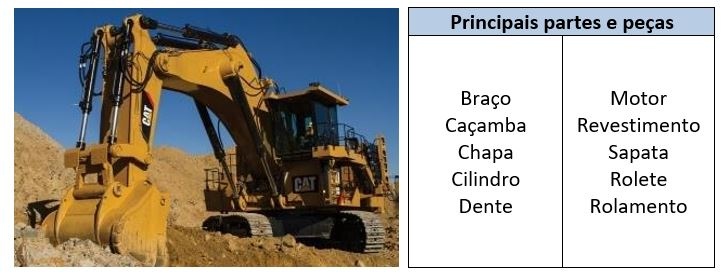
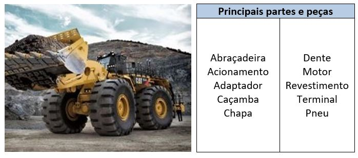
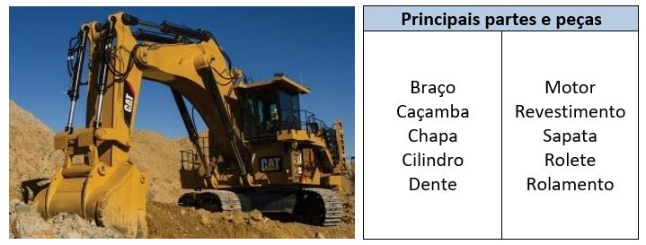
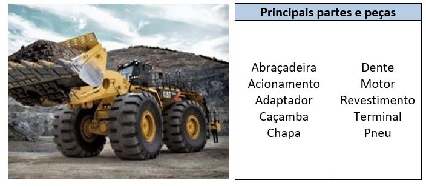
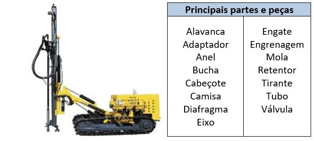
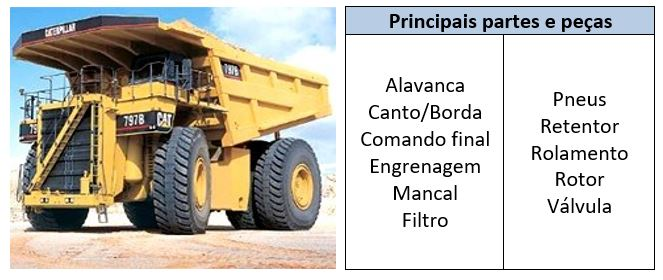
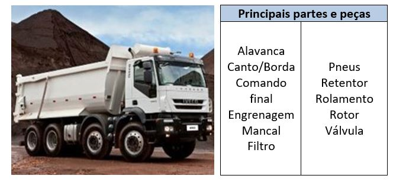
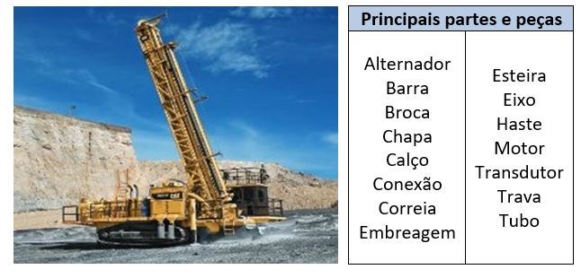

Após a detonação, são gerados fragmentos de rocha (Pedra Calcária), os quais são recolhidos por escavadeiras e pás carregadeiras, e depositados em caminhões. Este procedimento leva o nome de carregamento.
- Escavadeiras – Devido a sua mobilidade, estabilidade e força, realizam o carregamento dos fragmentos de rocha para depositá-los nos caminhões.
- Pás carregadeiras – Possuem a mesma função de carregamento. Trabalham com grande agilidade e têm maior acessibilidade à frente de lavra.
- Óleo Combustível
- Lubrificantes
Desmonte - Em seguimento, os blocos de rocha são desmontados através da detonação dos respectivos explosivos já presentes no solo perfurado.
- Espoletas
- Explosivos
- Cordéis de detonação
- Cartuchos
- Emulsões
A escavação pode ocorrer quando uma determinada frente de lavra não necessita de perfuração e detonação em função da qualidade do minério (Calcário e Argila). É realizada através de escavadeiras de grande porte e pás carregadeiras, as quais realizam o desmonte diretamente no bloco de rocha. São utilizados os mesmos equipamentos responsáveis pelo carregamento.
- Escavadeiras - Realizam o desmonte dos blocos de rochas quando as frentes de lavra não necessitam de detonação.
- Pás carregadeiras - Têm a mesma função das escavadeiras, porém são providas de maior agilidade.
- Óleo Combustível
- Lubrificantes
O mapeamento e execução de sondagens são operações necessárias ao aproveitamento racional das jazidas minerais e ao gerenciamento das operações de lavra e beneficiamento de minérios (Calcário e Argila).
Para garantir a viabilidade extrativa, bem como a qualidade do produto final, o corpo de minério é delimitado e quantificado através de um mapeamento do solo. São posteriormente retiradas amostras (testemunhos) do interior do solo com o uso de sondas rotativas, para a realização de análises químicas, as quais identificam as substancias presentes e os teores percentuais dos minerais de interesse em cada parcela do solo a ser lavrado.
A partir dos dados coletados, a estratégia da operação é definida. O solo é então demarcado para consequente perfuração.
- Sonda rotativa - Utilizada para a retirada de amostras (testemunhos) da rocha atravessada, podendo atingir grandes profundidades.
- Óleo Combustível
- Lubrificantes
A movimentação interna diz respeito ao percurso feito pelos caminhões carregados de minério (Calcário e Argila) desde a cava de extração até o britador primário. Os caminhões despejam no britador todo o minério extraído e partem para um novo ciclo de carregamento e movimentação interna. Os equipamentos utilizados nesta etapa são os mesmos caminhões da fase Carregamento.
- Caminhões fora de estrada - Efetuam a movimentação interna dos minérios extraídos até o britador ou pilha de Calcário. Objetivam a redução de custo por tonelada devido à alta quantidade de material movimentado.
- Caminhões rodoviários (basculantes) adaptados de até 49 toneladas - Esses caminhões são adaptados para a mesma função dos caminhões fora de estrada, porém, têm menor capacidade de carga.
- Óleo Combustível
- Lubrificantes
A perfuração consiste na realização de uma série de furos verticais na rocha, com perfuratrizes, até uma profundidade pré-determinada. Os furos na rocha são carregados com cargas explosivas, distribuídas ao longo do seu comprimento. Os procedimentos desta etapa são dirigidos para obtenção da melhor distribuição espacial da carga, boas condições de acoplamento com a superfície da rocha e tamponamento eficiente com materiais inertes para confinar a energia gerada pelas cargas explosivas.
- Perfuratrizes – Realizam perfurações no solo ou rochas com o objetivo de produzir furos ou veios com a profundidade desejada, para colocação dos explosivos.
